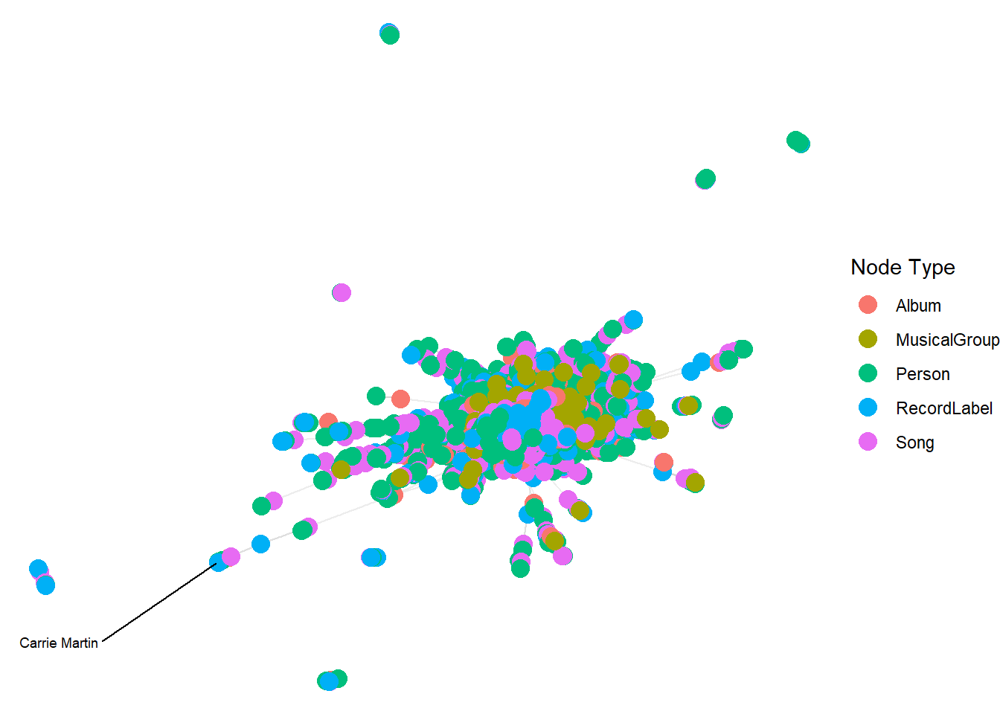

pacman::p_load(igraph, tidygraph, ggraph,
visNetwork, lubridate, clock,
tidyverse, graphlayouts,
concaveman, ggforce, jsonlite, dplyr,tidyverse, jsonlite,
tidygraph, ggraph,ggplot2,SmartEDA,igraph,visNetwork,DiagrammeR)Take-home_Ex03
kg <- fromJSON("data/MC1_graph.json",
simplifyDataFrame = TRUE)nodes_tbl <- as_tibble(kg$nodes)
edges_tbl <- as_tibble(kg$links) id_map <- tibble(id = nodes_tbl$id, #Retrieve the ID column of each row node
index = seq_len(
nrow(nodes_tbl))) #Generate a line number sequence from 1 to nedges_tbl <- edges_tbl %>%
left_join(id_map, by = c("source" = "id")) %>% # source id → from index
rename(from = index) %>%
left_join(id_map, by = c("target" = "id")) %>% # target id → to index
rename(to = index)edges_tbl <- edges_tbl %>%
filter(!is.na(from), !is.na(to))graph <- tbl_graph(nodes = nodes_tbl,
edges = edges_tbl,
directed = kg$directed)set.seed(1234)ggraph(graph, layout = "fr") +
geom_edge_link(alpha = 0.3,
colour = "gray") +
geom_node_point(aes(color = `Node Type`),
size = 4) +
geom_node_text(aes(label = name),
repel = TRUE,
size = 2.5) +
theme_void()Warning: ggrepel: 17411 unlabeled data points (too many overlaps). Consider
increasing max.overlaps
extract_subnetwork <- function(graph, node_name,
distance = NULL,
direction = c("all", "in", "out"),
edge_types = NULL,
node_types = NULL) {
direction <- match.arg(direction)
node <- which(V(graph)$name == node_name)
if (length(node) == 0) stop("Node name not found in graph.")
distance <- ifelse(is.null(distance), length(graph), distance)
mode <- switch(direction,
all = "all",
`in` = "in",
out = "out")
igraph_subgraph <- induced_subgraph(graph, vids = ego(graph, node, order = distance, mode = mode)[[1]])
nodes_df <- igraph::as_data_frame(igraph_subgraph, what = "vertices")
edges_df <- igraph::as_data_frame(igraph_subgraph, what = "edges")
if (!is.null(edge_types)) {
edges_df <- edges_df %>% dplyr::filter(`Edge Type` %in% edge_types)
}
if (!is.null(node_types)) {
nodes_df <- nodes_df %>% dplyr::filter(`Node Type` %in% node_types)
}
used_node_ids <- unique(c(edges_df$from, edges_df$to))
nodes_df <- nodes_df %>% dplyr::filter(name %in% used_node_ids)
tidygraph::tbl_graph(nodes = nodes_df, edges = edges_df, directed = igraph::is_directed(graph))
}subgraph_in <- extract_subnetwork(
graph,
node_name = "Sailor Shift",
distance = 5,
direction = "out"
)
subgraph_igraph <- as.igraph(subgraph_in)
nodes_all <- igraph::as_data_frame(subgraph_igraph, what = "vertices")
edges_all <- igraph::as_data_frame(subgraph_igraph, what = "edges")
sailor_id <- nodes_all$name[nodes_all$name == "Sailor Shift"]
edges_1st <- edges_all %>% filter(from == "Sailor Shift")
valid_targets <- edges_1st %>%
left_join(nodes_all, by = c("to" = "name")) %>%
filter(`Node Type` %in% c("MusicalGroup", "Song", "Album","RecordLabel")) %>%
pull(to)
valid_node_ids <- unique(c("Sailor Shift", valid_targets))
edges_vn <- edges_all %>%
filter(from %in% valid_node_ids | to %in% valid_node_ids)
used_nodes <- unique(c(edges_vn$from, edges_vn$to))
nodes_vn <- nodes_all %>%
filter(name %in% used_nodes) %>%
mutate(id = name, label = name, group = `Node Type`)
edges_vn <- edges_vn %>%
mutate(
label = `Edge Type`,
title = paste0("Edge Type: ", `Edge Type`)
)visNetwork(nodes_vn, edges_vn, height = "800px", width = "100%") %>%
visEdges(
arrows = "to",
font = list(
size = 12,
align = "middle",
color = "black"
)
) %>%
visOptions(
highlightNearest = list(enabled = TRUE, degree = 4, hover = TRUE),
nodesIdSelection = TRUE,
selectedBy = "group"
) %>%
visLegend() %>%
visLayout(randomSeed = 1234) %>%
visInteraction(navigationButtons = TRUE)